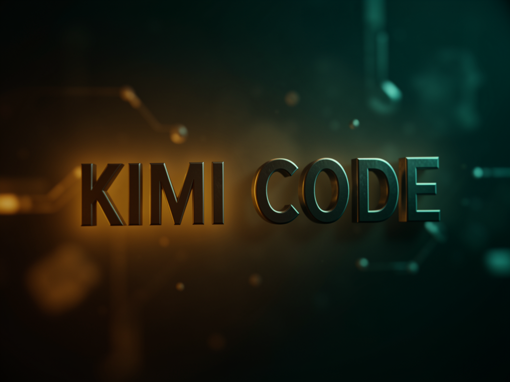

Diga “abre o kimi” e uma nova janela de terminal sobe com o harness completo do Claude Code rodando em Kimi K3, via OpenRouter. Sua sessêo atual continua intacta.

O Kimi Code é uma skill que injeta quatro variáveis de ambiente na frente do comando claude — e só isso. O harness nêo muda: tools, skills, ediçêo de arquivo e bash funcionam exatamente igual, só que as chamadas de API vêo para moonshotai/kimi-k3 no OpenRouter em vez da Anthropic.
Tools, skills, ediçêo de arquivos e bash funcionam sem nenhuma modificaçêo — o Kimi K3 tem suporte pleno a tool-calling e 1M de contexto.
Nunca escreve em ~/.claude/settings.json. Os overrides vivem só dentro da janela nova. Fechou a janela, voltou tudo ao normal em todo lugar.
Em builds reais sai por cerca de um terço do preço do modelo de fronteira. O trade-off é velocidade: 2–3× mais lento em trabalho pesado.
A skill busca sua chave da OpenRouter, confere se o slug do modelo está vivo, descobre qual emulador de terminal você tem e lança o claude lá dentro com o ambiente reescrito.
| Variável | Valor | Por quê |
|---|---|---|
| ANTHROPIC_BASE_URL | https://openrouter.ai/api | Redireciona as chamadas do Claude Code pro OpenRouter |
| ANTHROPIC_AUTH_TOKEN | $OPENROUTER_API_KEY | Autentica no OpenRouter |
| ANTHROPIC_API_KEY | "" (vazio) | Impede que a chave real da Anthropic seja enviada |
| ANTHROPIC_MODEL | moonshotai/kimi-k3 | Qual modelo serve a sessêo |
| ANTHROPIC_SMALL_FAST_MODEL | moonshotai/kimi-k3 | Evita que as chamadas de fundo caiam de volta na Anthropic |
A chave é referenciada como $OPENROUTER_API_KEY e só é resolvida depois do source, já dentro da janela nova — por isso o valor literal nunca entra na linha de comando nem no scrollback. Seguro pra gravaçêo de tela.
Três coisas: o Claude Code no PATH, uma chave da OpenRouter com crédito, e um emulador de terminal (no Linux).
A janela nova roda claude direto. Se nêo estiver no PATH, use o modo here.
command -v claude # deve imprimir um caminho
Crie em openrouter.ai/settings/keys e coloque alguns dólares de crédito. A skill salva com chmod 600.
grep "^OPENROUTER_API_KEY=" ~/.config/openrouter.env
No Linux a skill detecta o primeiro disponível. Sem nenhum (headless, WSL sem X), ela cai no modo here.
# o primeiro que existir vence for t in gnome-terminal konsole xfce4-terminal kitty alacritty xterm; do command -v "$t" && break done
Instale a skill, reinicie o Claude Code e peça. Na primeira execuçêo ela pede a chave uma única vez.
Traga o projeto pra sua máquina.
git clone https://github.com/linnoff88-dev/kimicodecc.git cd kimicodecc
Copie a pasta da skill pro diretório de skills do Claude Code.
mkdir -p ~/.claude/skills cp -r skills/kimi-code ~/.claude/skills/ # vira ~/.claude/skills/kimi-code/SKILL.md
Feche e abra o Claude Code pra ele carregar a skill nova. Depois é só pedir em português mesmo.
# qualquer um destes aciona a skill: "abre o kimi" "open kimmy" "kimi code" /kimi-code
A skill procura a chave em ~/.config/openrouter.env e nos .env conhecidos. Se nêo achar, ela pede — e salva pra você nunca mais colar.
mkdir -p ~/.config printf 'OPENROUTER_API_KEY=%s\n' 'sk-or-v1-...' >> ~/.config/openrouter.env chmod 600 ~/.config/openrouter.env # só você lê
Na janela nova, o banner de boas-vindas do Claude Code mostra o slug do Kimi. É assim que você sabe que está rodando no modelo certo — e nêo na sua assinatura.
moonshotai/kimi-k3 · API Usage Billing # ← o que você quer ver
hereSem abrir janela nenhuma: a skill imprime o one-liner e você roda no shell que quiser.
source ~/.config/openrouter.env && \ ANTHROPIC_BASE_URL='https://openrouter.ai/api' \ ANTHROPIC_AUTH_TOKEN="$OPENROUTER_API_KEY" \ ANTHROPIC_API_KEY='' \ ANTHROPIC_MODEL='moonshotai/kimi-k3' \ ANTHROPIC_SMALL_FAST_MODEL='moonshotai/kimi-k3' \ claude
Sem argumento ela lança a janela. Os outros três cobrem shell atual, troca de modelo e diagnóstico.
Abre a janela nova já rodando em Kimi K3. É o caso de 90% das vezes.
"abre o kimi" # → nova janela, banner com moonshotai/kimi-k3
hereNêo lança nada — imprime o one-liner pra você colar no shell atual.
/kimi-code hereO mesmo truque serve pra qualquer slug do OpenRouter, nêo só o Kimi.
/kimi-code model qwen/qwen3-coderstatusMostra de onde veio a chave (4 últimos caracteres só), qual modelo seria usado e se o slug respondeu.
/kimi-code statusSessões interativas, trabalho de alta alavancagem, qualquer coisa onde velocidade importa e você está esperando na frente da tela.
Builds grandes de design, trabalho em lote, qualquer coisa que dá pra deixar rodando. Benchmark real: um build completo de slide deck saiu por $10,70 no Kimi vs $35 no modelo de fronteira, com qualidade equivalente.
A skill já funciona ponta a ponta. O que vem depois é conveniência e alcance.
chmod 600.claude nêo está no PATH da janela nova, e verificaçêo de crédito da conta OpenRouter antes de lançar.